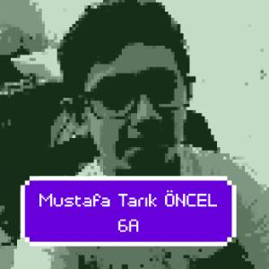
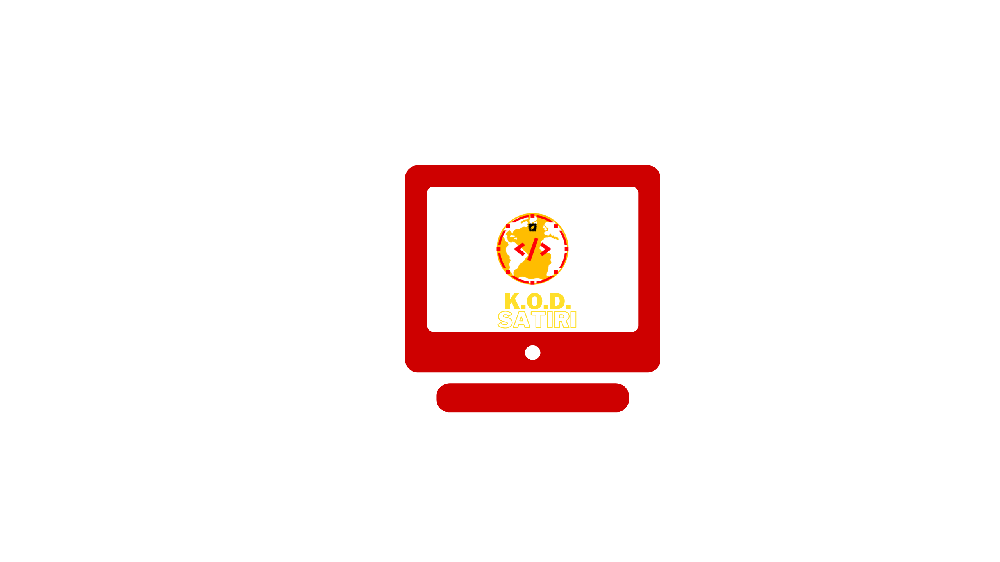

Bu sitenin amacı
Bu sitenin amacı aslında yoktur.
HTML Nasıl?
HTML başlangıç olarak bence oldukça kötü bir seçenek.
Hobilerim
Hobilerim kod yazmak,basketbol maçları izlemek,izlediğim filmi eleştirip puanlamaktır.
Nasıl Başladı bu yazılım işi
Ben eskiden oyun şirketlerinde çalışıp oyunu test edicisi olmak istiyordum.Ama Türk şirketlerinde.Bende Mount and Blade adlı oyun ile Ankaralı şirket TaleWorlds'ta çalışmak istiyordum.Ama sayfalarında tester(test edici) iş ilanı bulamayınca ne gerek var test etmeye en iyisi yapıcı olmaktır diyerek, sayfada yazan ileri düzeyde C# programlama dilini gördüm.Dedim niye orda C hastag yazıyor?Sanırım yanlış yazmışlar diyerek C programlama dili yazdım.Yanlışlık ile C Sharp değil onun atası C yi öğrenmeye başladım tabi çok geçmedş anladım yanlış programlama diline çalıştığımı sonra C#'a geçtim.7 aydır programlama dili öğreniyorum ve hep değiştirdim.En yisini aradım şimdi WEB tabanlı çalışıyorum.

YouTube kanalım
Şimdi sorucaksınız kanalımın içerikleri ne diye içerikleri kodlama peorgramlama ile ilgili.Şuan sadece 5 aboneye sahibim.Kanalımın Adı K.O.D. Satırı. 